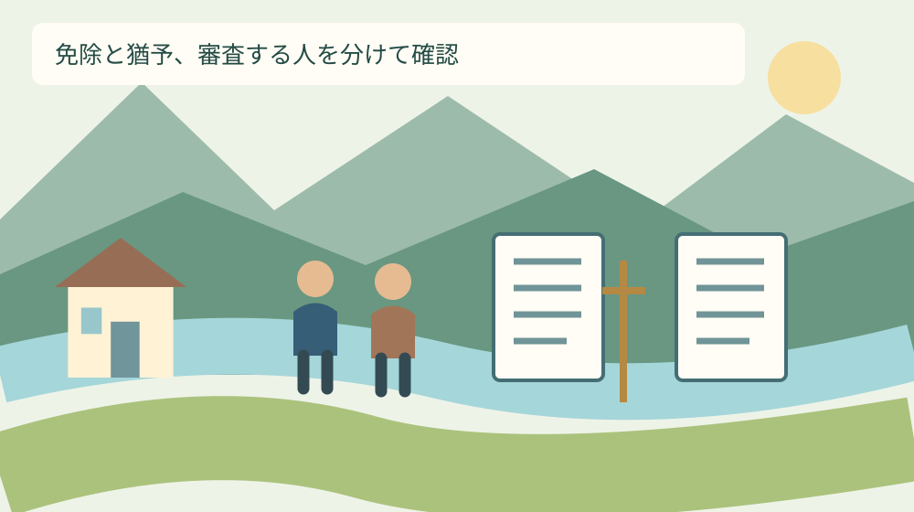
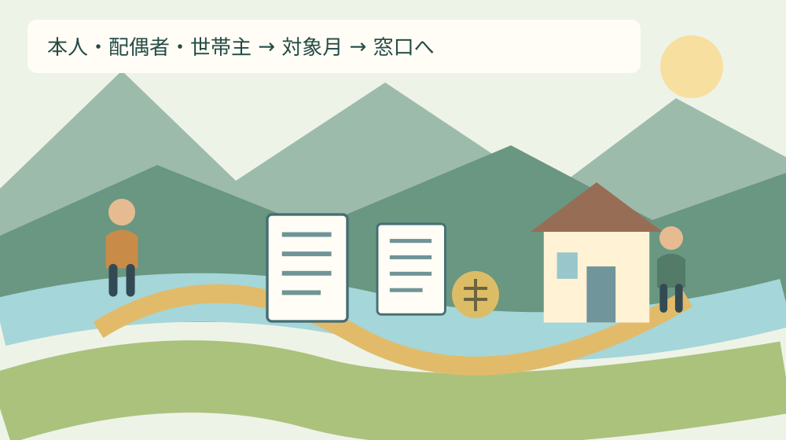

手続き・制度
国民年金の免除と猶予｜森町の家計で比較
Q. 国民年金が払えないとき、免除と納付猶予は何が違う？
A. 国民年金の免除は本人・配偶者・世帯主、納付猶予は20歳以上50歳未満の本人と配偶者の所得が審査対象です（学生は別制度）。承認された猶予期間は受給資格期間に入りますが、追納しなければ老齢基礎年金額に反映されません。2026年度の対象は2026年7月～2027年6月。今日は本人・配偶者・世帯主が誰かを確認し、森町の年金窓口へ相談する準備をします。
食費や住まいをやりくりする人へ
退職や収入減のあと、食費、家賃や住宅ローン、光熱費の順を考えながら支払いをやりくりする。森町で家族の暮らしを守る人にとって、年金の納付書は別の重さを持って届くことがあります。払う気持ちがあるかという話だけで、家計の不足は埋まりません。
国民年金保険料には、経済的に納付が難しい場合に申請する免除制度と納付猶予制度があります。どちらも単に納付書を保管しておくこととは違います。この記事では、誰の所得を審査するかを入口に、将来の年金への扱いと森町での相談順を整理します。
私は大石浩之（磐田市／不動産業）です。家の維持費や生活の支出を考える立場から、年金の支払いが難しいときの確認を、家族の段取りに落としたいと思います。実在の相談者の所得や受給結果を紹介する記事ではなく、確認資料を基にした私の提案です。
年金だけでなく生活費全体が苦しい場合は、森町の生活困窮の相談窓口も別の入口です。一つの制度で家計全体が解決すると決めず、年金の申請と暮らしの相談を分けます。窓口を増やす前に、何の支払いに困っているかを一行残せます。
事実整理｜所得を審査する人が違う
日本年金機構の2026年8月3日更新の説明では、免除は本人・配偶者・世帯主、納付猶予は本人・配偶者の所得を審査します。納付猶予の対象は20歳以上50歳未満で、学生には別の学生納付特例制度があります。制度名が似ていても、確認する人は同じではありません。
| 確認点 | 免除 | 納付猶予 |
|---|---|---|
| 所得を審査する人 | 本人・配偶者・世帯主 | 本人・配偶者 |
| 年齢等 | 第1号被保険者等の条件を確認。学生・任意加入等は別扱い | 20歳以上50歳未満。学生は別制度 |
| 老齢年金額 | 免除区分に応じて反映。一部免除は残額納付が必要 | 追納しなければ反映なし |
意外に感じるのは、親が世帯主で所得がある場合も、その一点だけで納付猶予の相談まで諦めなくてよい点です。世帯主の所得を審査する免除と、審査しない猶予を分けて確認します。ただし本人や配偶者の条件があるため、親と住んでいれば承認されるという意味ではありません。
日本年金機構の電子申請説明は、配偶者について別世帯の場合も含むとしています。同じ家に住むかどうかだけで配偶者欄を省かないようにします。家計を分けていること、住所が異なること、年金の審査で誰を確認するかは、別々に整理する必要があります。
比較表はどちらが得かを自動判定する表ではありません。私はまず対象となる人を確定し、その人の所得や対象月を窓口で確認する順を勧めます。支払いの悩みが同じでも、年齢、婚姻関係、世帯主、加入区分が違えば、相談の入口も変わります。

2026年度分は7月から翌年6月まで
日本年金機構「令和8年7月の年金委員Topics」は、2026年度分の免除等の受付を2026年7月1日に開始したと案内しています。対象は2026年7月分から2027年6月分です。学校や自治体の事業で使う4月始まりの年度と同じ期間ではありません。
森町の「国民年金」ページも、一般の免除期間を7月～翌年6月、学生の制度の期間を4月～翌年3月と分けています。2026年9月21日の時点で、どの年度を申し込む話なのかを確認してください。家族のメモには年度名に加え、最初と最後の月を書きます。
私は納付書を月ごとに並べ、支払い済みか、未確認か、申請を相談したい月かを区別する方法を提案します。手元に同じ月の書類が二枚ある場合も、そのまま二重の支出として数えません。支払い状況が分からない月は、通帳だけで断定せず年金窓口へ照会します。
2026年度分の案内を読んだからといって、2026年1月～6月分も同じ一枚の申請対象だと決めないようにします。過去の期間がある場合は、いつからいつまでを相談したいかを書いて窓口へ伝えます。この記事では、すべての未納月を一括して扱えるとは案内しません。
受給資格の期間と、年金額を分けて読む
老齢基礎年金を受け取る資格に必要な期間と、実際の年金額の計算は別です。日本年金機構は、承認された免除や猶予の期間を受給資格期間へ算入する一方、年金額への反映には違いがあると説明しています。この二つを分けて読むことが比較の土台になります。
2026年度の対象期間について、全額免除は全額を納付した場合の2分の1が年金額に反映されます。納付猶予は、追納しない限り年金額に反映されません。「今は全額を払わない」という見た目が似ていても、将来の計算まで同じではありません。
一部免除には4分の3免除、半額免除、4分の1免除があります。日本年金機構は、減額後の保険料を納付しないと一部免除が無効となり、未納期間になると注意しています。免除という言葉だけを見て、その後の納付書をすべて不要と扱わないでください。
免除や猶予が承認された期間には、10年以内の追納という制度もあります。私は、将来の追納を今すぐ約束するより、対象期間と相談先を記録しておく方が現実的だと考えます。実際に追納する金額や期限は、個人の記録を基に年金事務所へ確かめます。
良い点｜未納のままにしない相談の入口がある
国民年金の免除と猶予の良い点は、納付が難しい状態をそのままにせず、審査を受ける入口があることです。私は収入が落ちた家族に、気合いで払うか諦めるかという二択だけを示したくありません。事情を確認する仕組みがあること自体を、具体的な相談材料として評価します。
免除と猶予で審査対象が違う点も、生活の形に合わせて確認する余地になります。私は親の家で暮らす人や配偶者と別世帯の人が、自分の家族関係を説明する材料として比較を使えると考えます。誰が対象かを知ることで、尋ねるべき質問を絞れます。
日本年金機構はマイナポータルからの電子申請を案内しています。紙の申請は住所地の市区町村や年金事務所へ提出でき、郵送も可能です。私は役場への移動が難しい人に、来所だけを前提にしない選択肢がある点を良いと受け止めます。
ただし便利な入口があっても、入力が分からない人を置き去りにしてよいとは思いません。私は申請手段の速さより、本人が何を申請し、どの期間の審査を受けるかを理解できることを優先します。紙か電子かは、家族が安全に扱える方法から選べます。
注文したい点｜免除の文字だけで支払いを止めない
免除と猶予の説明で、私が特に明確にしておきたいのは、申請しただけでは承認ではない点です。申請の受付、審査結果、承認された期間、その後に納付する分を分けて案内してほしい。名前が似た制度ほど、家族の思い込みを減らす表示が必要だと考えます。
一部免除になった場合は、減額後の支払いが家計に残ります。私は通知を受け取った日を終点にせず、納付する月と金額、納付書の有無を確かめる予定を置きたいと思います。納付がなお難しいなら、通知を放置せずに年金窓口へ状況を伝えてください。
収入がなくなった月の手取りだけで、審査結果を判断しないことも必要です。案内は所得を基準としており、給与の振込額や世帯全員の収入の合計と同じ数字を指すとは限りません。どの年の、誰の所得を確認するのかを先に尋ねるのが私の提案です。
本人以外の資料を探す作業が、介護や家計を担う一人へ集まる点にも気を付けたいと思います。今日は配偶者と世帯主が誰かだけを確認し、資料の準備は本人と相談して分担します。家族だから全員の所得を推測してよい、という進め方にはしません。

対案・結論｜今日は三つの立場を確認する
今日の一歩は、紙に「本人・配偶者・世帯主」と三つ書き、それぞれ誰に当たるかを確かめることです。本人が世帯主なら、その関係を記します。配偶者がいない場合はその事実を残し、誰かの情報を埋めて三人にする必要はありません。
三つの立場が確認できたら、本人の年齢と、相談したい最初と最後の月を書きます。50歳になる時期が申請期間と重なる場合は、生年月日と対象月を添えて扱いを確認してください。この記事の比較表だけで、期間全体の可否を一律に決めることはできません。
申請期間中に結婚、離婚、世帯主の変更等があった場合、日本年金機構の電子申請説明は、変更事由や変更年月日等の入力を案内しています。私は「いま誰と住んでいるか」という一行だけで済ませず、変化した日を別に残す方法を勧めます。
本人、配偶者、世帯主の所得の確認が必要と分かっても、最初から全員の資料をコピーして持ち歩くとは限りません。日本年金機構は所得の証明書類の添付は原則不要としつつ、税の申告が済んでいない場合等の注意を案内しています。必要資料は個別に確認します。
森町の年金窓口と予約相談を使い分ける
森町の国民年金の担当は住民生活課国保年金係で、掲載電話番号は0538-85-6313です。町の「国民年金」ページは、納付が難しい場合に免除・納付猶予の申請手続きを案内しています。相談では、支払いが難しい月と退職等の事情を先に伝えられます。
森町「暮らしの相談」には、掛川年金事務所が行う年金相談も掲載されています。前日までに電話予約する案内で、予約先は0537-21-5524です。町の国民年金窓口への手続き確認と、予約する年金相談を、同じ来所予定として混ぜないようにします。
予約の有無で動き方が変わる点は、森町の相談窓口の予約を分ける記事でも整理しています。相談会を待つ必要があるのか、通常の窓口や郵送等で申請できるのかを先に確認すれば、移動や仕事の休みを考える材料になります。
窓口へ連絡する前のメモは、私なら「国民年金の免除と納付猶予を相談したい。対象は何月から何月。退職日はこの日。本人と世帯主の関係はこうです」と組みます。これは質問例です。手元で分からない点は分からないと伝え、確認に必要な資料を尋ねます。
退職と収入減を、資料の年月に直す
失業等による特例は、収入が減ったという自己判断だけで確定するものではありません。日本年金機構は、失業・倒産・事業廃止等の事実が確認できた場合に、その人の前年所得にかかわらず審査する特例を案内しています。離職票等の確認資料が関わります。
本人が退職しても、配偶者や世帯主の条件をすべて確認しなくてよくなるとは限りません。私は誰が退職したかをはっきりさせ、対象者ごとの条件を窓口へ尋ねる方法を勧めます。家族全員を一括して「無収入になった世帯」と書くと、実際の事情が伝わりにくくなります。
退職後にどの年金の加入区分になるかも、保険料の免除とは別の確認です。転職先で加入する場合や、配偶者の扶養の条件を確認する場合など、状況によって手続きが変わります。私は納付の相談だけで加入手続きも済んだと思い込まないよう、二つを分けてメモします。
働き方を考え直す場合は、森町の仕事探しと最低賃金改定の記事も判断材料になります。年金の審査は、将来受ける予定の給与だけでは決まりません。求人条件、家計の見込み、申請に使う所得資料は別々に並べて確認します。
家族に残す記録は申請と承認を別にする
家族に残す記録は、「相談した日」「申請した日」「結果を受け取った日」を分ける方法を私は提案します。受付番号や問い合わせ先を残せば、後から別の家族が状況を確認するときも、どの段階で止まっているのかを説明できます。
通知が届いたら、全額免除、一部免除、納付猶予のどれかと、対象となる月を照合します。申し込んだ期間と結果の期間が同じとは決めつけません。分からない通知は捨てず、窓口へ問い合わせる際にその文言を読めるよう手元に置きます。
家計簿では、申請中の支出を勝手にゼロへ置き換えないようにしたいところです。私は審査中と確定後の予定を分け、承認された内容に応じて更新する方法を勧めます。一部免除で残る保険料や、ほかの税・保険料も同じ制度で消えると考えないためです。
年金番号、個人番号、家族の所得を含む資料は、日常の連絡用のグループへそのまま送らない方法を考えます。私が共有したいのは、手続きの進み具合と次の担当です。本人の詳しい情報まで、協力する全員に見せる必要があるかは別に確かめます。
大石の視点｜家計の限界を個人の根性にしない
私は、払えない月を根性で埋める話にせず、審査対象と次の手続きを確かめるべきだと考えます。暮らしを続ける人は、既に食費や移動費、住まいの維持費を調整しています。制度の比較が役立つのは、その人が次に何を確認すればよいかまで分かるときです。
不動産の仕事の目線でも、今月の現金不足だけを見て家を売る話へ急ぐのは違うと私は思います。継続する支出と、一時的な手続きの遅れを分ける必要があります。年金の申請で必ず家計が持ち直すとは言えませんが、確認せずに大きな決断をする理由もありません。
一方で私には、将来の年金額を説明するほど、今日の生活費に困る人へ重い宿題を増やしてしまう迷いがあります。だから今日の作業は、本人・配偶者・世帯主の確認までに絞ります。追納や長期の住まいの判断は、相談して得た材料を基に順を追って考えられます。
家計の担い手が一人で抱え続ける形では、説明を読んでも動く時間が取れません。私は電話できる時間を家族で一つ空けることも、生活を支える具体的な協力だと考えます。制度の名前を覚えるだけでなく、確認する人と次の連絡先を決めるところまで進めたいと思います。
比較のあとに確認する一つの連絡先
免除と納付猶予の比較で最初に確かめるのは、所得を審査する人です。その後に、承認された期間の扱い、残る納付、将来の追納を順に見ます。私は情報を一度に全部覚えるより、比較の欄を埋め、未確認の箇所を一つずつ聞く方法を勧めます。
森町の年金窓口へ伝える紙に、本人・配偶者・世帯主、対象月、退職等の事情を残してください。今日すべての判断を終える必要はありません。ただ、未納のまま何もせず置くことと、免除や猶予を申請して承認を受けることは違います。確認できる連絡先を一つ持って、手続きを始める準備をします。
よくある質問
手続きを進める前に確認したい条件を、質問ごとに整理します。
親が世帯主で収入があると、申請できませんか？
国民年金の免除では本人・配偶者・世帯主の所得を審査しますが、納付猶予では世帯主の所得は審査対象になりません。納付猶予は20歳以上50歳未満で、学生は別制度です。親の収入だけで相談を諦めず、本人と配偶者の所得、年齢、対象期間を確認してください。ただし、その条件だけで承認が決まるわけではありません。
猶予が認められれば、将来の年金額も増えますか？
承認された納付猶予の期間は、老齢基礎年金を受け取るための資格期間には算入されますが、追納しない限り年金額には反映されません。全額免除は、2026年度の対象期間について全額納付時の2分の1が年金額に反映されます。今日の支払いと将来の年金額を分け、個別の記録や追納は年金窓口で確認してください。
退職して収入が減れば、自動的に免除されますか？
自動的には免除されません。申請と承認が必要です。失業等の事実を確認できる場合には、その人の前年所得にかかわらず審査する特例がありますが、配偶者や世帯主の条件も関係します。離職票等の資料を用意し、森町住民生活課国保年金係や年金事務所へ、加入手続きと免除等の申請を分けて確認してください。

公式情報源
2026年9月21日確認。制度・数値は変更される場合があります。個別の適用は担当窓口へ、医療・税務・法律等の専門判断は各専門家へ確認してください。